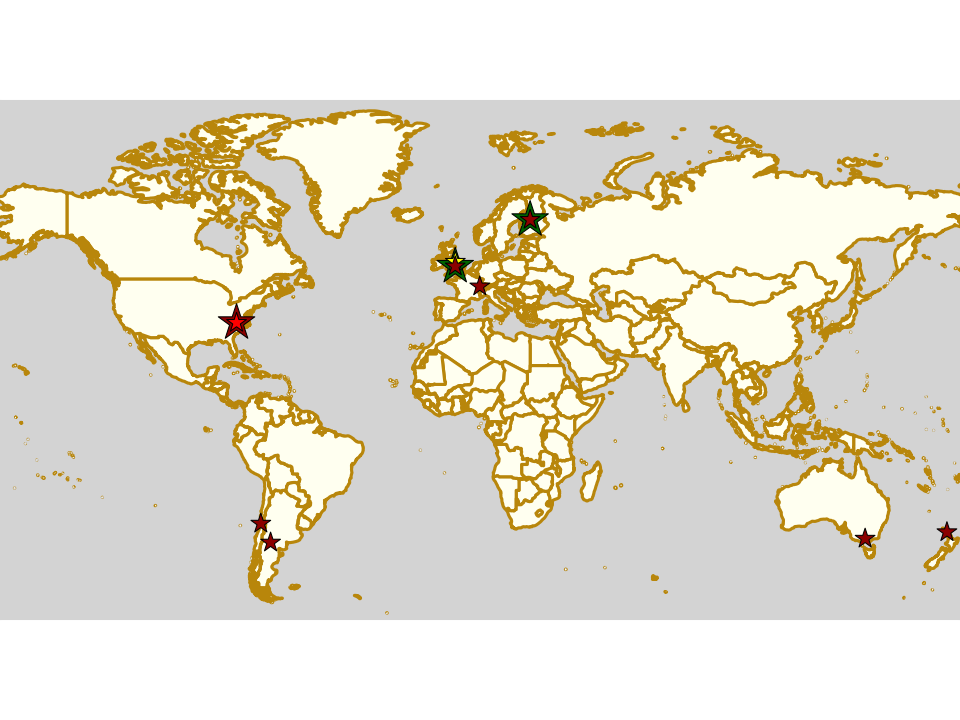

Weekend Highlights: 07 September 2019
This is a pretty busy weekend, so we're just doing whole-weekend and Saturday fixtures in this update, with Sunday's selection in a follow-up article. The coming few days, as well as seeing the first of the WFTDA Playoffs (with attendees from) also see the first in a regular series of Short Track events in the UK, a a gaggle of bootcamps and clinics from the UK to Argentina, and even more tournaments. In National tournaments, Chile hosts the 2nd and 3rd fixtures in its Torneo X, in Vi
The rules are, as usual: highlights limited to 1 event per country, with an "extra" event allowed for a different kind of fixture (so, 1 tournament and 1 bootcamp), or if they involve Scottish leagues (since we are the Scottish Roller Derby Blog). Other notability might also allow the extra event - great posters, notable teams, etc. (League birthdays may count as "special" enough, at our discretion ;) )
We've bent the rules a bit this time, because it's important to highlight derby in regions which need more attention, and because it's quiet enough that we have the space.
In a bid to make this list as useful as possible, we've avoided links to Facebook except where noted. (Links to Teams are to non-Facebook resources - Instagram, or actual team pages - we'd strongly recommend that Teams get themselves an actual webpage [we can help host one if you need help]).
Locations are roughly organised East-West (with things before the weekend out sequence at the start).
Sat: Whangerei, New Zealand
Northland Nightmares Junior Roller Derby host the first of a hoped-to-be annual Junior Roller Derby tournament in New Zealand: The Younger Games. This will also be the first ever JRDA-rules tournament in New Zealand at all! The hope is that this tournament will provide additional encouragement for more Junior Roller Derby teams to form in the country, as well as giving the existing teams much-needed track time.
This event will be livestreamed (details not available yet)
- Teams competing:
- Hell Razors (Northland Nightmares J | Whangerei)
- Guns n Roses (Bay City Rollers J | Napier)
- Mixed subs team (Pirate City Rollers J | Auckland, Dead End Derby J | Christchurch, Hellmilton Roller Derby J | Hamilton, Moana Roller Derby? J | Tauranga)
Event starts: 1100 Saturday
Venue: Kensington STADIUM, Whangarei, Northland, New Zealand
Sat: Preston, VIC, Australia
Victorian Roller Derby League host a fundraising bout, giving the skaters of Victoria a chance to play against VRDL B (the best B-team in the world, currently), and help VRDL make it to Champs.
- VRDL Bees (Preston B) versus "The Best of Victoria"
Event starts: 1215 Saturday (first whistle)
Venue: The Factory, 62-64 Oakover Road, Preston, VIC, Australia
Sat: Nivala, Finland
Riverdale Rollers host a free all-day bootcamp, "The Officials Stripes Black" for NSOs and Referees, with parallel sessions for the two. The bootcamp includes two scrimmages to practice what has been learned during the rest of the event, and is coached by a host of officials: Esa Pajari, Tommi of Finland, Major Glitter, Iskae, Dan De Leon and Kaiser Gueuze.
Whilst this bootcamp will mostly be coached in English, for accessibility, Finnish speakers will also be present for support.
Event starts: 1000 Saturday
Venue: Uikko Sports Centre (Nivalan jäähalli), Kalliontie 57, Nivala, Finland
Sat: Nivala, Finland
Riverdale Rollers follow up the bootcamp above with a pair of (if our Finnish doesn't fail us) exhibition bouts.
- Exhibition bout 1
- Exhibition bout 2
Event starts: 1430 Saturday (games start)
Venue: Uikko Sports Centre (Nivalan jäähalli), Kalliontie 57, Nivala, Finland ?
Sat: Neuchâtel, Switzerland
Les Devotchkas host the 2019 edition of Track Mechanique, their annual quadruple-header event in the centre of Switzerland.
- Les Devotchkas (Neuchâtel) versus Molly Hatchets (Pontarlier)
- Zürich City Roller Derby versus Les Flèches Revêches (Dijon)
- Burgundy Derby Crew ( M) versus UB Masculine (mixed subs MRDA-gender team)
- Team Switzerland Roller Derby versus Team Italy Roller Derby
Only the second bout is listed by FTS
Event starts: 1000 Saturday (doors open)
Venue: Patinoires du Littoral, Quai Robert-Comtesse 4, Neuchâtel, Switzerland
Wed: Halifax, UK
ALL-IN Community Roller Derby host the first in a hopefully regular series of Short Track Scrimmage events, started after feedback from their first "Short Track Experiment" earlier in the year.
- Intro to Short Track session overview
- 2 x 30 minute games [mixed level, full contact]
- or
- 1 x 30 minute game [mixed level, full contact]
- 1 x 30 minute game [mixed level, low contact, on officials recommendation]
Event starts: 1930 Wednesday
Venue: Threeways Sports & Leisure, Nursery Lane, Halifax, UK
Sat: Birmingham, UK
Central City Roller Derby host a Refereeing Clinic run by their very own Rollin Rat, running alongside Central City's scrimmage in the afternoon. This will be a classroom-based morning session, followed by on-skates sessions, including 2 hours of active refereeing (making use of that scrimmage, above). Footage may be available afterwards for personal review.
Event starts: 0900 Saturday
Venue: Doug Ellis Sports Centre, 150 Wellhead Lane, Birmingham, United Kingdom
Sat: Birmingham, UK
Central City Roller Derby host a Harry Potter themed tournament (Rowling obviously has a strong influence in Roller Derby themeing at the moment: this is at least the third large scale event with this theme in the past few months!), with mixed, Open-To-All gender policy teams. As mentioned above, this event will be officiated with the support of the Refereeing Clinic co-located with it.
- Selection games (4 team round robin, short-format games)
- Championship game (top 2 teams from round robin, WFTDA-rules regulation game)
Event starts: 1200 Saturday (doors open?)
Venue: Doug Ellis Sports Centre, 150 Wellhead Lane, Birmingham, United Kingdom
Sat-Sun: Neuquén, Argentina
Malditas X host a two-day bootcamp coached by Hulka. This will be two afternoons of on-skates coaching, finishing in a scrimmage at 1730 on the Sunday.
Event starts: 1430 Saturday
Venue: Polideportivo Gregorio Álvarez, Calle 5 Y Collón Curá, Neuquén, Argentina
Sat-Sun: Viña del Mar, Chile
Tacones Bandidos host the second and third fixtures of the Torneo X, Chile's National Tournament. We wrote a quick intro to this year's Torneo X here.
- Sat:
- Chillanrolleras (Chillan) versus Bayonetas (Santiago B)
- Metropolitan All-Stars (Santiago A) versus Tacones Bandidos (Viña del Mar)
- Deskarriadas (Osorno) versus Indomitas (Valdivia)
- Sun:
- Chillanrolleras versus Deskarriadas
- Metropolitan versus Indomitas
- Tacones Bandidos versus Bayonetas
Event starts: 1100 Saturday
Venue: Complejo Deportivo Jonathan Araya De Forestal, Viña del Mar, Chile
Also of interest, due to their attendees:
Fri-Mon: Winston-Salem, NC, USA
[FACEBOOK LINK] [FACEBOOK LINK (CIB)] [FTS LINK]
Greensboro Roller Derby host the first WFTDA Playoffs of this season, of interest to us due to the participation of (deep breath): 2x4 Roller Derby (Argentina); Helsinki Roller Derby (Finland); Paris Rollergirls and Lomme Roller Girls (France); Bear City Roller Derby (Germany); and Rainy City Roller Derby (UK). That's fully half the tournament represented by non-USA teams, which is extremely good for international roller derby.
There will also be a Lady Trample-run Chicks in Bowls 'Shred session' on the following Monday, and the usual WFTDA contact options during Playoffs.
Note: at the time of writing, Hurricane Dorian is predicted to pass across, or close to, parts of North Carolina on Friday, with Winston-Salem at the western edge of the prediction envelope. At present, it is too early to say if evacuation will be ordered, due to the inherent uncertainty in hurricane modelling.
First bouts for teams of interest:
- Paris Rollergirls versus Santa Cruz Derby Girls
- Helsinki Roller Derby versus Lomme Roller Girls
- Windy City Rollers versus Bear City Roller Derby
- 2x4 Roller Derby versus (winner of Paris v Santa Cruz)
- Rainy City Roller Derby versus (winner of Helsinki v Lomme)
Event starts: 1000 Friday
Venue: Winston-Salem Fairgrounds & Annex, 421 W 27th St, Winston-Salem, North Carolina, USA